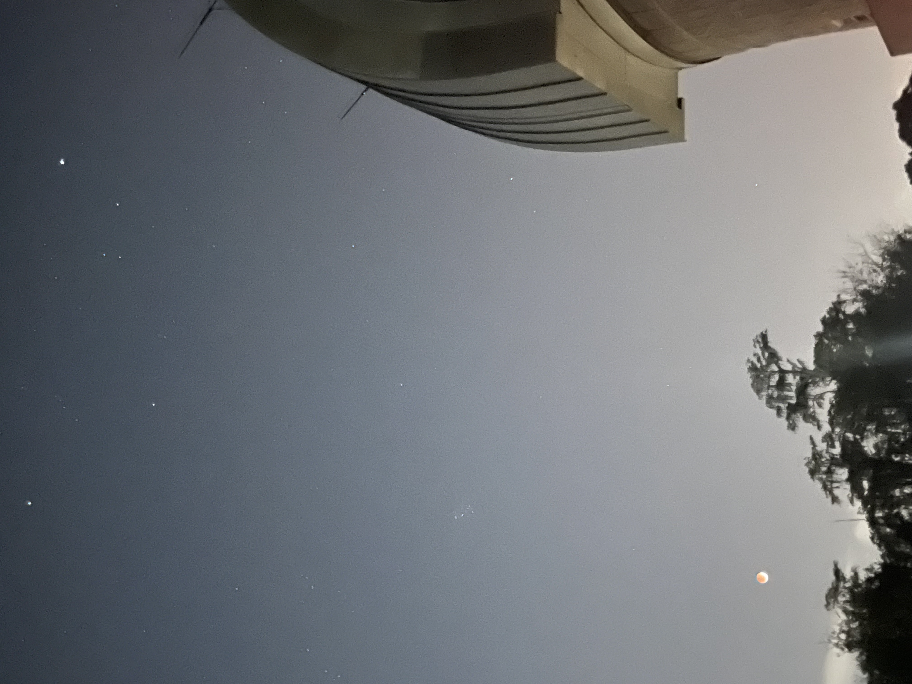
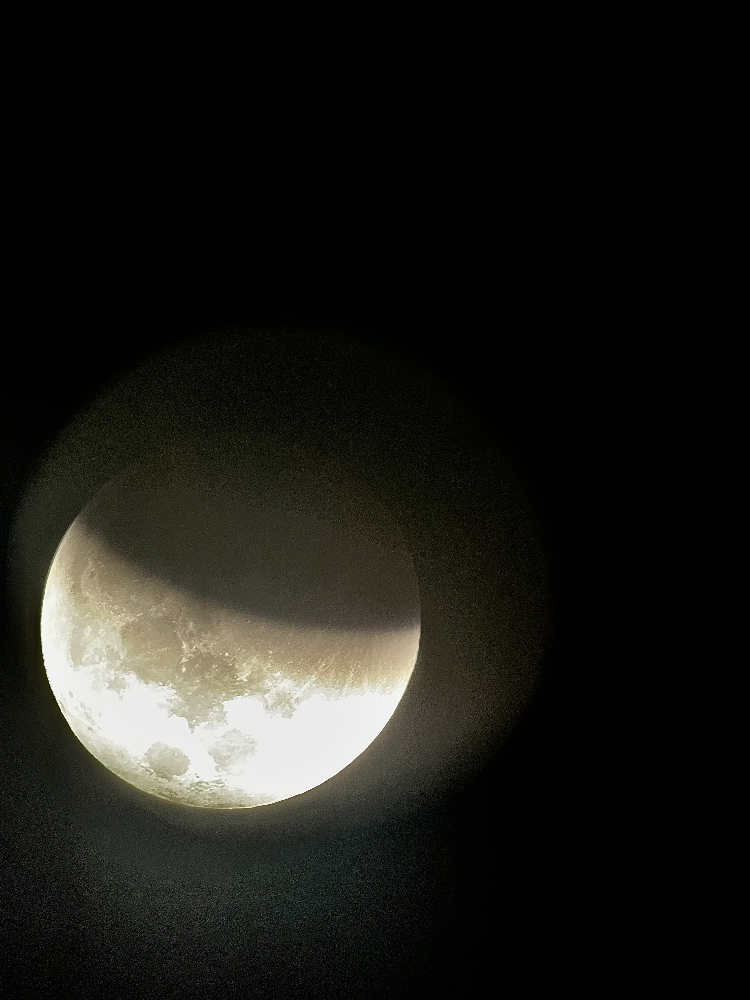

Projects & Research
Projects & Research
Like a rocket launching into space, my understanding of aerospace engineering and the professional world has just begun to take shape. Over the next few years, I aim to expand my knowledge and put everything I've learned into action.
Embarking on my research journey was a significant milestone, fueling my eagerness to gain hands-on experience in the lab. Working alongside a supportive post-doc graduate, I felt warmly welcomed into the lab environment while absorbing invaluable knowledge. Under her mentorship, I acquired proficiency in operating the IS50 FTIR spectrometer and skillfully preparing and testing sample mixtures using the equipment. Under her guidance, I gained valuable insights into the real-world applications of our work. Our research focused on studying trojan asteroids and distinct lunar regions, while utilizing measurements of albedo for various carbon black mixtures to faithfully replicate different lunar terrains for in-depth analysis.
With the transition into Aerospace Engineering I was eager to get some hands-on experience. Therefore, I joined KXR and became a member of the propulsion team for the IREC team within the rocketry club at UCF. During the spring of 2024, I specialized in the Mechanical and Manufacturing subteam, where I contributed to the design of various rocket components and played a key role in the fabrication process. I utilized CAD software and modeling techniques to design parts such as bulkheads, umbilical systems, O-rings, and struts. To further enhance my skill set, I began expanding my knowledge of MATLAB for simulations, aiding in calculations and trajectories for model rockets. I also volunteered in the machine shop, which not only allowed me to save the club approximately $500 in assembly costs but also provided me with fundamental knowledge and hands-on experience using essential tools at my university's machine shop, including the manual mill, boring tools, and drilling tools. This experience deepened my understanding of the importance of selecting appropriate materials and structures for modern rockets. Additionally, I gained insight into evaluating the feasibility of propulsion and power systems, particularly when working with various combustion chambers.
I was accepted into the Planetary Sciences and Astrophysics REU at Cornell University and assigned to work in the ASTRA Lab, a research facility focused on electro plasma sprays and spectroscopy. I was mentored by Kaylin Borders, a Ph.D. student leading the project, who was eager to see results by the end of the summer. My work focused on researching cooling techniques for high-power Hall effect thrusters. Specifically, the research involved the fabrication and testing of cooling methods using a simulated plasma source, while also laying the groundwork for future thermal testing. Our primary objective was to determine whether implementing a water-cooling loop around a simulated thruster could significantly help maintain the system’s thermal threshold. This water-cooling approach serves as preliminary work to assess the feasibility of Regenerative Cooling, a technique commonly used in many chemical propulsion systems. By studying this method, we aim to develop a more effective thermal management system for future applications of Hall effect thrusters. My first responsibility was designing a test stand that met several key requirements, including adaptability for testing future variations, minimizing thermal contact, ensuring stability with the thruster, and allowing for adjustable height with standoffs. I thoroughly enjoyed creating different iterations of the model and ultimately learned a great deal about the modeling process and how it translates to manufacturing. After completing the design, I spent the next week gathering the necessary materials and coordinating with the machine shop to have the plate water-jetted from aluminum. I then assembled the test stand using all the required components. To construct the prototype thruster, we used ceramic alumina and a stainless steel backplate. One of the challenges we encountered was finding a suitable adhesive to assemble the prototype thruster. The adhesive needed to have low outgassing properties, a high thermal threshold, and be vacuum-safe. After acquiring the adhesive, we used it to bond Teflon tubing around the thruster, creating our cooling system. We then used an industrial chiller to control the temperature of the water circulating around the thruster, and employed copper film and a heater to simulate the plasma source. Future work will involve using thermocouples to measure temperature variations at different points on the thruster to monitor the system's thermal performance. The team also plans to conduct thermal testing within a vacuum environment using a vacuum chamber. As we completed the testing, we developed a test plan and assembly handbook to document the steps for assembling the test stand and thruster, as well as instructions for using the chiller and heater and connecting them to the vacuum system. The test plan also included the start and shutdown procedures for vacuum testing, guidelines for performing data acquisition, and details on where all the materials were obtained. Overall, I successfully created a versatile test stand designed for the project's longevity, meeting several key design requirements. We conducted extensive research to identify the most suitable adhesives for our needs and set up the testing system for future experiments and data acquisition. At the end of the internship, I prepared a poster and delivered a presentation to showcase our achievements and the work accomplished during the project.
In June 2024, I assumed the role of Professional Development Chair at UCF IEEE to give back to my school and share my knowledge on career growth with the club. The club's board has been holding bi-weekly meetings leading up to the fall semester to prepare for events and collaborations with various companies. I have been developing plans and setting objectives for myself and my committee to meet deadlines and mitigate the workload during the fall semester. My goal is to help our members grow professionally and teach them how to effectively market themselves to recruiters and at job fairs. Additionally, I want to promote participation in research at our institution, as it offers incredible opportunities—some of which have personally benefited me. We are also planning to collaborate with other STEM student organizations to raise awareness of our club and foster teamwork and community within UCF.
I helped volunteer for the Astronomy Club at UCF and was able to volunteer for Knights under the stars. I was able to educate kids and other college students on the parts of a telescope and what was out in the sky at the time. Here are some pictures from the event.
 I also participated in HackADay by Knight Hacks@UCF, where we created the front end of an app that was like duolingo but for learning anything and it would utilize an AI to better understand how to present information to people depending on their preferred learning style.
I was also part of a project for Society of Phyiscs Students called the Marsh White Outreach project. We went to a local elementary school and taught kids about circuits and the phyiscs behind them. Furthermore, we demonstrated electricity in mini-circuits and explained the different applications of circuits in real life.
My summer was very exciting because I was able to start my research in planetary astronomy and finish my outreach project with SPS. In this outreach project we visited an elementary school and taught them about electricity, circuits and the physics related to them. At our event, we set up four interactive stations, each dedicated to different facets of electricity. One station delved into the intriguing effects of water and saltwater on circuits. I personally led a station focused on insulators and conductors, imparting knowledge about their roles in circuits and how they function – or don't function – within the circuitry.